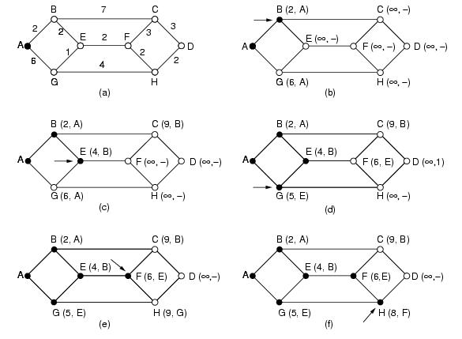
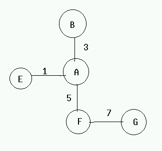
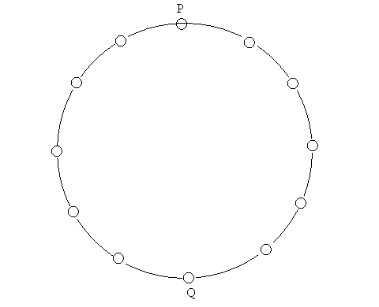

1. Dijktstra's Algorithm:
Look at the weighted undirected graph of Figure.1(a), where the weights represent, for example, distance. We want to find shortest path from A to D. We start by making node A as permanent, indicated by a filled in circle. Then we examine each of the nodes adjacent to A (the working node), relabeling each one with the distance to A. Whenever a node is relabeled, we also label it with the node from which the probe was made so that we can construct the final path later. Having examined each of the nodes adjacent to A, we examine all the tentatively labeled nodes in the whole graph and make the one with the smallest label permanent, as shown in Figure.1(b). This one becomes new working node.
We now start at B, and examine all nodes adjacent to it. If the sum of the
label on B and the distance from B to the node being considered is less than the
label on the node, we have a shorter path, so the node is relabeled. After all
the nodes adjacent to the working node have been inspected and the tentative
labels changed if possible, the entire graph is searched for the tentatively
labeled node with the smallest value. This node is made permanent and becomes
the working node for the next round. The Figure. 1 shows the first five
steps of the algorithm.

Note: Dijkstra's Algorithm is applicable only when cost of all the nodes is non-negative.
2. Bellman Ford's Algorithm:
We look at the distributed version which works on the premise that the information about far away nodes can be had from the adjoining links.
The algorithm works as follows.
Every node should have the information about it's immediate neighbors and over a period of time we will have information about other nodes. Within n units of time , where n is the diameter of the network, every node will have the complete information. We do not need to be synchronized i.e. do not need to exchange information at the same time.
Routing algorithms based on Dijkstra's algorithm are called Link State Algorithms. Distance Vector Protocols are based on distributed Bellman's algorithm. In the former we are sending little information to many nodes while in the latter we send huge information to few neighbors.
Count-to-Infinity problem:

Suppose the link between A and E is down events may occur are:
(1) F tells A that it has a path to E with cost 6
(2) A sets cost to E to be 11, and advertise to F again
(3) F sets the cost to E to be 16, and advertise to A again
This cycle will continue and the cost to E goes to infinity. The core of the problem is that when X tells Y that it has a path somewhere ,Y has no way to know whether it itself is on the path.
During this process of counting to infinity, packets from A or F destined to E are likely to loop back and forth between A and F, causing congestion for other packets.
Design of a bad routing protocol can
lead to highly undesirable results. Consider the following scenario to
understand this. We are having 16 nodes logically connected in a ring as shown
in Figure1.

Each node sends one unit of data in unit time except one node Q which sends e (0<e<1) unit of data in unit time. We consider cost of the link as the traffic in that link. We consider P as the only receiver in the ring. Now Ideally we must have nodes left of the diagonal PQ sending data clockwise and that on the right of the PQ counterclockwise as shown in Figure 2. We may assume that Q sends data counterclockwise. Assume that this ideal distribution was achieved at some time. Now we can see that cost of links to the left of PQ are respectively 1,2,3 ..,7 while that on the right of PQ are e,1+e,2+e ..,7+e. Therefore when we reconsider the shortest path the node immediately to the right of Q will see traffic 28 to the left while 28+7e to the right and therefore will start sending data clockwise and same is true for Q also. This will heavily change the traffic on the network. Now the traffic load will shift to the left of PQ and next reconsideration will make a lot of nodes from left of PQ send data counterclockwise. This may keep oscillating and will cost a lot to the network. To prevent these two steps can be taken :
1. Assign a minimum cost to each link.
2. Do not change the route until you get a significant advantage.